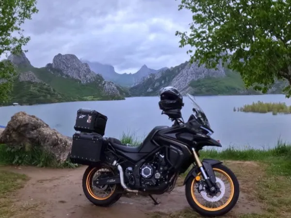
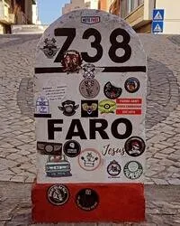

Somos da Póvoa de Lanhoso e desde janeiro de 2024 organizamos expedições de mota para verdadeiros aventureiros. Ao longo do nosso percurso, temos explorado trilhos e estradas dentro e fora das fronteiras portuguesas, sempre com espírito de descoberta e paixão pela estrada.

Foto nos Picos da Europa, Riaño, Espanha
Expedições
Estas são as expedições anuais que fazem parte do nosso percurso. Todos os anos voltamos a estes destinos que nos desafiam, inspiram e nos fazem querer ir mais longe.
Nacional 2
A mítica Estrada Nacional 2 atravessa Portugal de norte a sul, ligando Chaves a Faro ao longo de mais de 700 km de paisagens variadas. Esta expedição percorre aldeias históricas, serras, planícies e rios, oferecendo uma viagem única pelo coração do país.

Marco Final da Nacional 2, Portugal
É uma rota clássica para qualquer amante de motos, combinando curvas, cultura e a sensação de atravessar Portugal de ponta a ponta.
Picos da Europa
Os Picos da Europa são um dos destinos mais emblemáticos para qualquer motociclista. Esta expedição leva-te por estradas de montanha impressionantes, vales profundos e curvas desafiantes que atravessam o coração da cordilheira cantábrica. Entre desfiladeiros, miradouros e aldeias remotas, é uma viagem que combina adrenalina, natureza e paisagens de cortar a respiração. Uma rota obrigatória para quem procura aventura além-fronteiras.
A nossa viagem aos Picos da Europa em 2025.
Serviços
Expedições anuais
Viagens personalizadas
Acompanhamento em grupo
Planeamento de rotas
Tabela de preços 2026
Serviço
Preço (Sozinho)
Preço (Com Passageiro)
Observações
Nacional 2
500€
900€
4 dias, Ponto de partida em Chaves, Portugal
Picos da Europa
1000€
1600€
5 dias, Ponto de partida em Riaño, Espanha
Viagem Personalizada
Sob Consulta
Contacto
Para dúvidas, informações ou pedidos de viagens personalizadas, preenche o formulário abaixo e entraremos em contacto contigo o mais breve possível.